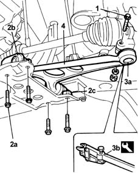

4410B40 lower wishbone (with balljoint) of left or right front suspension (one) - r+r -check wheel geometry separately
- Path
- Procedures > 44 SUSPENSION AND WHEELS > 4410 FRONT SUSPENSION > 4410B front suspension wishbones > 4410B40 lower wishbone (with balljoint) of left or right front suspension (one) - r+r -check wheel geometry separately
- Kind
- repair procedure (removal / refitting; the operation number is the code)
- Applies to
- all engines; all production periods
- Interactive page
- https://sloeber94.github.io/elrnDB-fMltpl/en/#/2891707
Applies to: all engines; all production periods
 Removing
Removing
 Refitting
RefittingPosition the vehicle on a lift and raise it.
4450B10 Front WHEEL (one) - R.R. .
1. Undo the bolt fixing the track control arm ball joint to the front hub steering knuckle.
2. Undo the bolts (2a) for the front (2b) and rear (2c) U-bolts fixing the track control arm to the crossmember.
3. Separate the track control arm ball joint (3a) from the front hub steering knuckle using the tool (3b).
4. Remove the lowr front track control arm.
 | Name | Country |
|---|---|---|
2b | Extractor | 1.857.035.000 |

Applies to: all engines; all production periods
Refitting
RemovingReposition the lower front track control arm.
Tighten the bolts and the front and rear U-bolts fixing the track control arm to the crossmember to torque.
 | Fastening | Component | Ø | Value (daNm) |
|---|---|---|---|---|
- | Bolt | FRONT SUSPENSION LOWER LEVER | M10 x 1.25 | 7.5 |
Tighten the nut fixing the track control arm ball joint to torque.
| Fastening | Component | Ø | Value (daNm) |
|---|---|---|---|---|
- | Nut | FRONT SUSPENSION LOWER LEVER BALL JOINT | M10 x 1.25 | 7 |
4450B10 Front WHEEL (one) - R.R. .
Lower the car and remove it from the ramp.
Topics linked from this page (1)
Topics that link to this page (6)
- H01 VEHICLE DRIFT
- H20 STEERING WHEEL OSCILLATIONS/ VIBRATIONS / WHILST DRIVING
- S41 NOISE' FRONT / WHILST DRIVING OVER UNMADE ROAD
- S46 NOISE' FRONT / AT TAKE-OFF
- 4410B42 lower wishbone (complete with balljoint) of front suspension (one-remainder) - r+r following operation 4410b40
- 4410D13 front suspension beam - r r